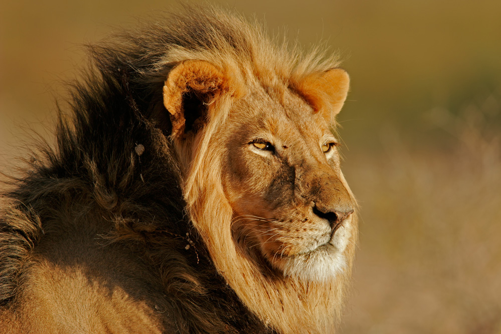
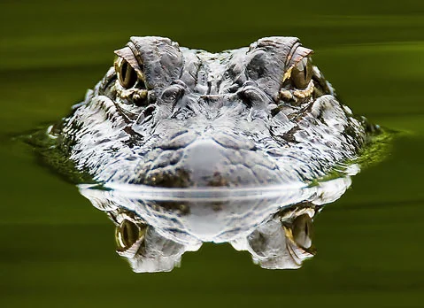
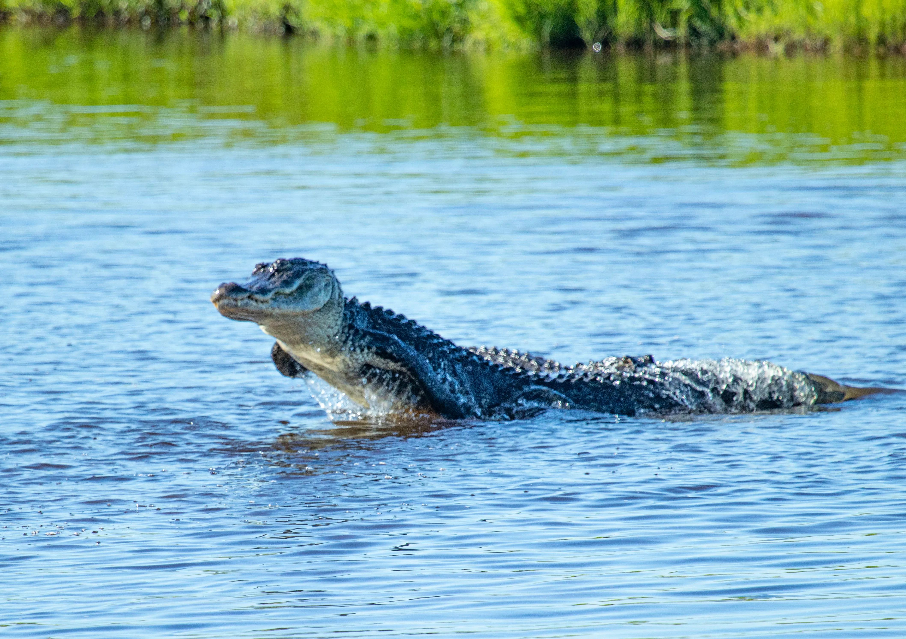

Lion

- Mella
Mella is an expert assassin but a sweetheart to anyone he befriends. He grew up at this zoo and was raised by the animal care speciaslist Mandy. Mella's favorite thing to do is to laugh and eat.

- Karla
Karla is the biggest meanie pants but also is a huge spectacle for visiters. Karla, short for Karlaos, is a big fan of hide and go seek. The people love coming to see where this guy is hiding. One time, he blended himself into the wall and no one could find him the entire day.
Alligator
- Wren
While quite dangerous, these alligators are more than just feared creatures. Wren is a sleeper, but not above water. If you can, find him and his prominent green scales. He is very likely slumbering under the water.

- Aspen
If you can't find Aspen, it is very likely that is laying on Wren while he is sleeping. Wren is a heavy boy with a heavy appetite.

- Mika
Mika is a gentle a sweet gator to his keepers. Very gentle and careful. Now other creatures should be careful around this fierce beast.